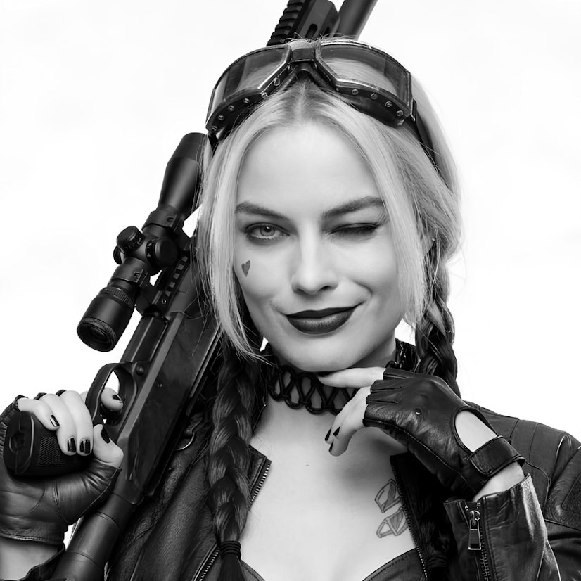
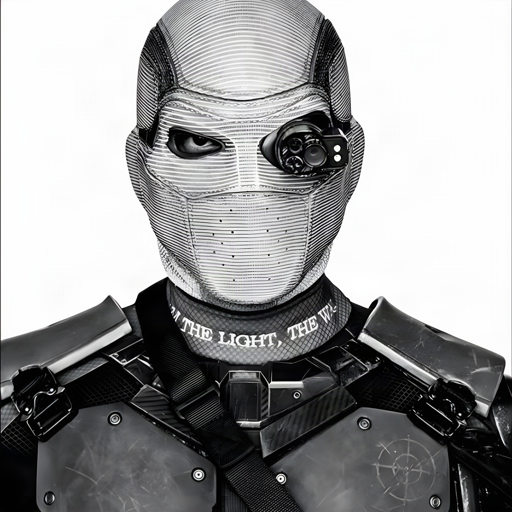
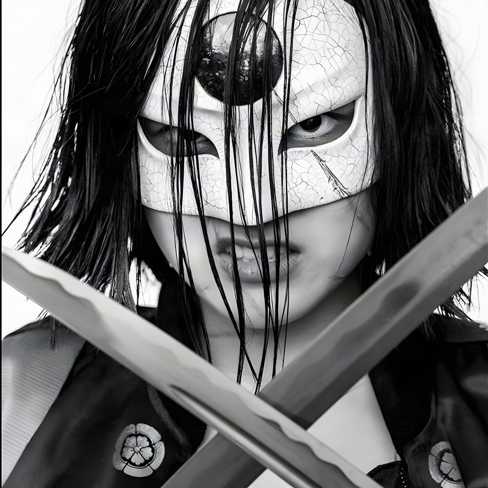
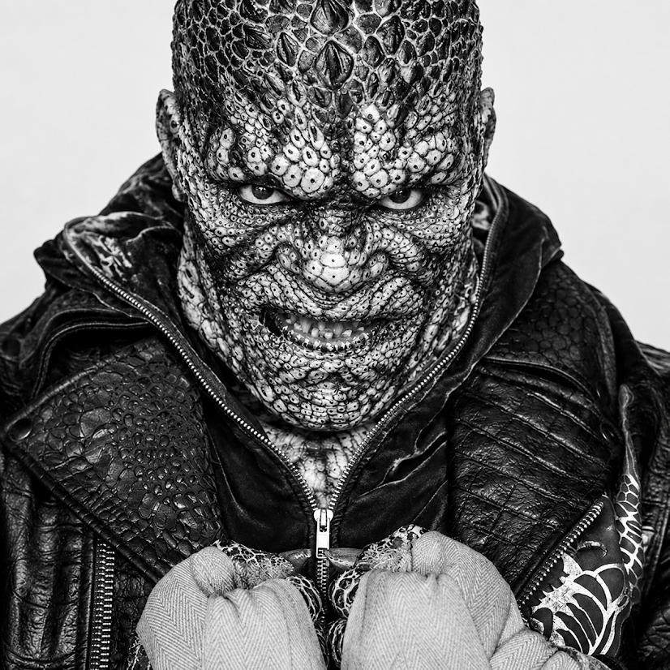
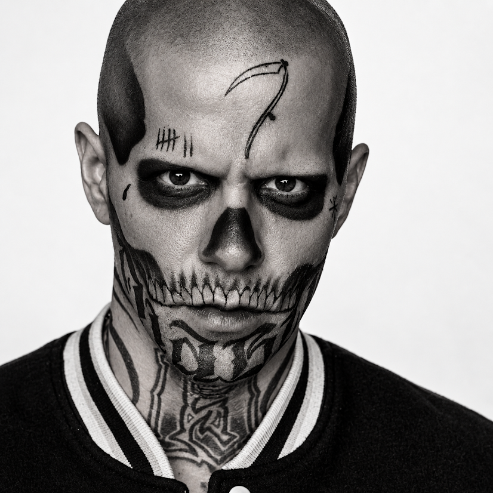
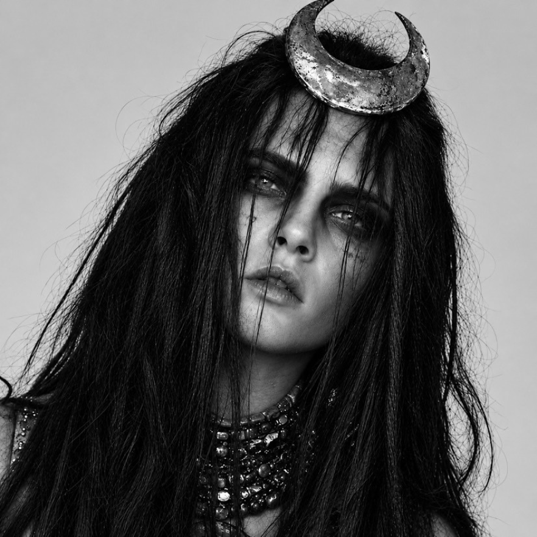
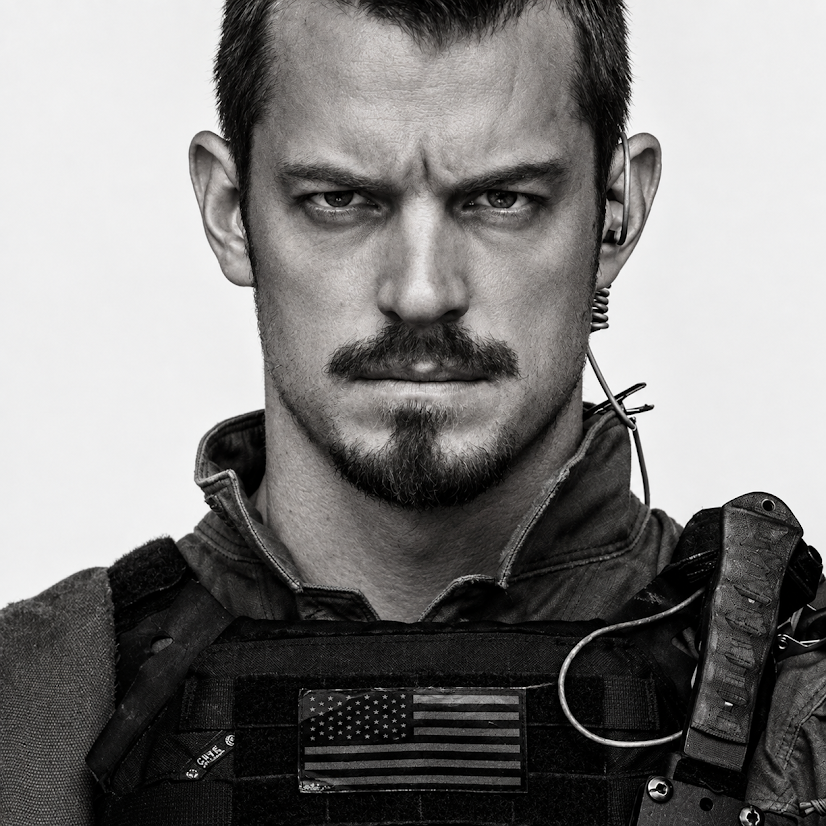

Hareley Quinn
Uma anti-heróina imprevisível, habilidosa, e conhecida por sua personalidade exótica
Um time para executar missões governamentais secretas, perigosas e de alto risco!!

Uma anti-heróina imprevisível, habilidosa, e conhecida por sua personalidade exótica

Um atirador extremamente habilidoso e conhecidopor sua precisão.

Um criminoso especializado no uso de bumerangues e conhecido por seu comportamento irreverente.

Uma habilidosa guerreira japonesa conhecida por dominar sua em combate.

Um personagem com aparência reptiliana, grande força física e habilidades de combate impressionantes.

Um personagem com a habilidade de controlar e produzir fogo.

Uma das entidades mais poderosas do universo DC, com habilidades de posseção e magia negra no geral.

Militar responsável por liderar e supervisionar a equipe durante suas missões.